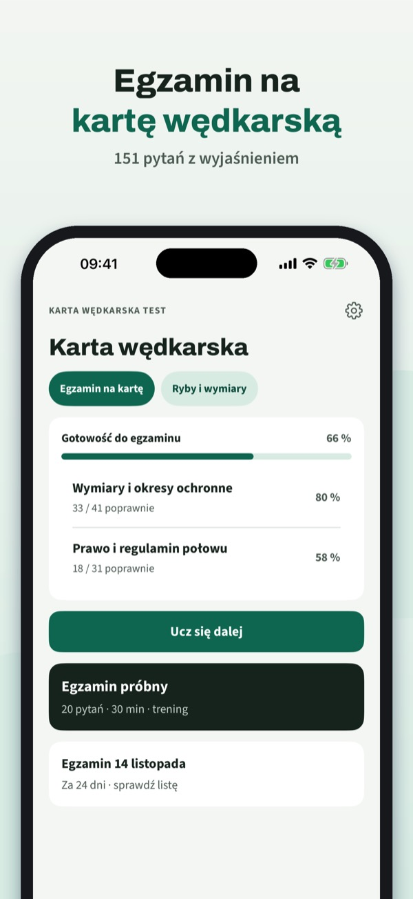
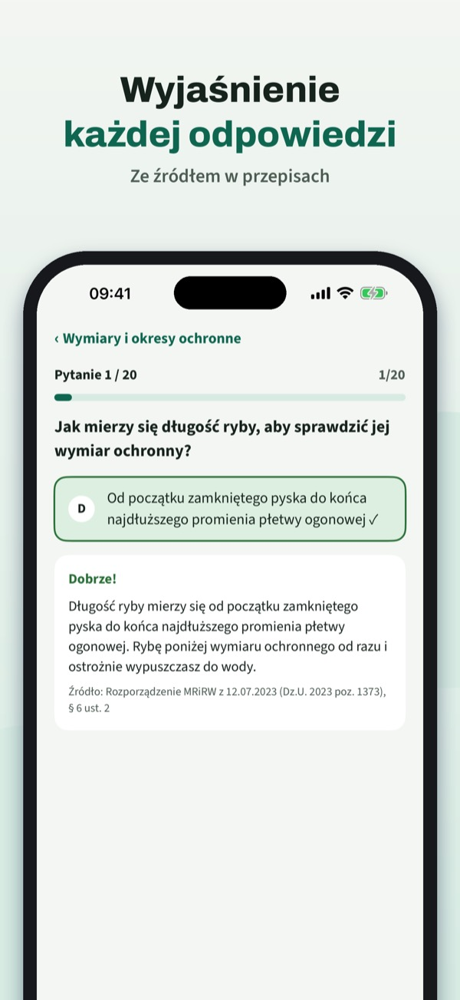
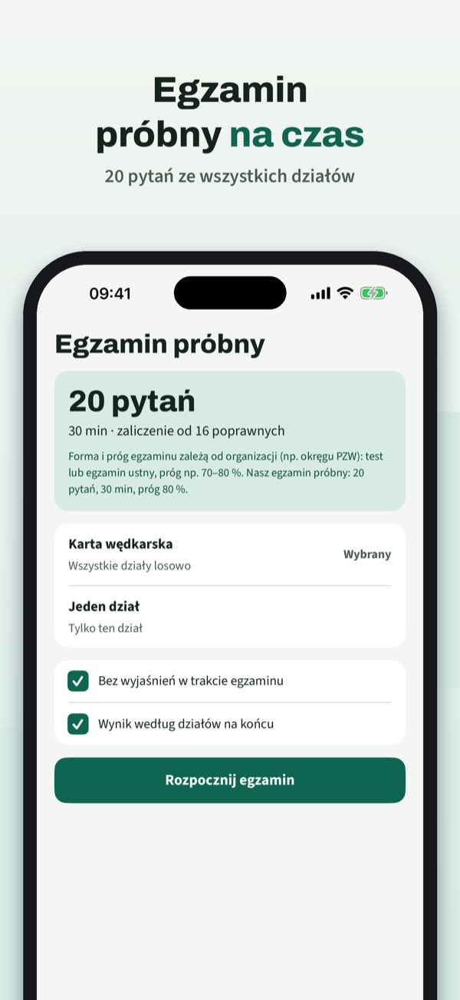

Pytania i wymiary ochronne ryb
Ćwicz do egzaminu na kartę wędkarską: pytania z wyjaśnieniem, egzamin próbny, wymiary i okresy ochronne ryb – po polsku i bez internetu.



Karta Wędkarska Test pomaga przygotować się do egzaminu na kartę wędkarską – z pytaniami po polsku i wyjaśnieniem każdej odpowiedzi.
• Pytania według działów z wyjaśnieniem każdej odpowiedzi
20 pytań, słownik i listę kontrolną możesz używać bez zakupu. Pełna wersja to jednorazowy zakup, który odblokowuje wszystkie pytania, egzaminy próbne i statystyki. Bez subskrypcji.
Karta Wędkarska Test jest niezależna i nie jest powiązana z PZW ani starostwem. Egzamin zdajesz przed komisją egzaminacyjną.
Terms of Use (EULA): https://www.apple.com/legal/internet-services/itunes/dev/stdeula/
Privacy: https://baytechbv.github.io/privacy/karta-wedkarska-pl/